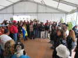
Dieppe, le plus grand festival du monde, 10 jours de cerf-volant, et j'y étais ! On commence par un briefing général et obligatoire à tous les participants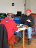
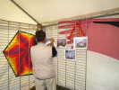
Le CVCF a son barnum et une équipe de 6 : François le Président, Eric, Sylvien, José, Loïk et moi, et moi, et moi... Nous mettons en place le stand, François monte une expo d'éolophotos... (ben oui : aérophotos = pris d'aéronef, alors j'ai inventé...).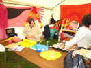
Eric prépare son atelier de coccinelles pour enfants, mais tout le monde y bossera, au contact des enfants ou en préparation pour couper les toiles, les baguettes, les brides... On n'est pas payés à ne rien faire, ça non !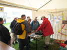
José Wallois monte comme convenu son expo sur la prise de vue sous cerf-volant, avec démo en direct de descente d'image TV du festival sur un moniteur mais on n'aura du courant que... mercredi malgré notre insistance ! Et encore, on a dû aller acheter une rallonge de 50 m !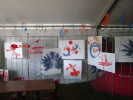
Thérèse a aussi fini de monter son expo. Ses cerfs-volants ont créé un style et fait bien des envieux... et des émules !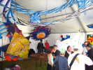
Michel Gressier reçoit au milieu de ses grandes oeuvres : roue, Fibule, Double Square dont un blanc qui sera peint en direct pendant la semaine...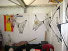
Les Espagnols montrent leurs papillons géométriques, qui supportent tous les vents, et voleront même en indoor...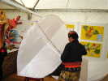
L'Indonésie a un joli stand couvert de cerfs-volants typiques et délicats ! On y prépare aussi quelque chose de plus grand, avec sans doute un arc sonore...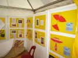
Tout cela témoigne d'une longue tradition et d'un art millénaire dans le travail du bambou et du papier !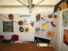
En Martinique, Désiré montre entre autres ses cerfs-volants en une seule feuille d'arbre...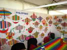
Les Philippines déploient un impressionnant panel de combattants de toutes les formes, très décorés... Il faut dire que parallèlement se déroulent sur l'hippodrome les championnats du Monde de combattants...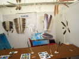
La Suède, comme toujours, montre ses CVs en plumes de grands oiseaux, qui voleront d'ailleurs souvent (les CVs...) !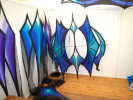
J'aime bien ceux-ci tout en courbes et en dégradés de bleus, australiens, peut-être...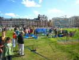
Un petit tour aux Jardins du V..t avec les classiques de Patrick et Annick, les moulinets en CD de François, le jardin de Patricia, les cactus de Fernando, etc.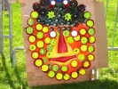
Justement, Fernando a innové avec ce quatre-z-yeux, tout en bouteilles découpées, évidemment. On en reparlera à la fin du festival !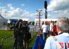
Joël a aussi fabriqué de nouveaux gadgets à chemins de billes ou de balles ! Il fabrique lui-même les machines : cintreuse, soudeuse, pour une exécution nickel des chemins de roulement, mais aussi des vis sans fin et engrenages !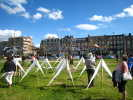
Robert Valkenburg a créé encore de nouvelles girouettes-moulinets de haute tenue, en bois contournés polis et vernis...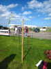
Une petite chose simple mais efficace de CarnetDeVol : des rubans verticaux tendus par des vergues sur un mat unique. Selon l'orientation, le chant varie...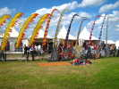
Sur les terrains de vol, Georges Peters est présent et expose ses réalisations magiques en une belle parade...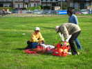
Un beau dragon rouge aux bois de cerf arrive sur le terrain avec ses deux porteurs !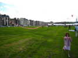
Voilà, tout est démêlé, plus qu'à courir pour le lancement !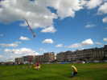
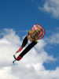
Les indiens de Mangalore ont lancé ce grand cerf-volant.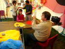
Côté CVCF, Eric a débuté les ateliers cerf-volant pour enfants : des coccinelles très simples, 2 baguettes croisées, un point de bridage, qui volent à la perfection.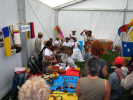
Côté Colombie, on fait des cerfs-volants aussi, mais bien d'autres objets et on joue une musique endiablée. Mais la troupe sera moins présente que les maoris de la dernière édition....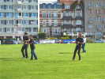
Les Crazy Drivers : Fabrice, Ronan, Damien et Stéph ont pris possession du terrain de démonstration pour un show spectaculaire !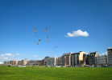
Ils ont une routine qui a l'air assez rodée, alors que souvent, ils se rencontrent et se mettent d'accord 15 mn avant sur ce qu'ils vont faire... La présentation est bien rythmée contrairement à d'autres teams de révos où le tâtonnement est de rigueur...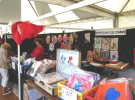
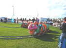
Pour les enfants, il y a d'autres attractions que le cerf-volant, en bordure de la promenade...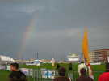
Un grain solide vient de passer et de faire tomber le vent (et abriter les cervolistes), mais c'est bon, dès que le vent tournera, je repartira...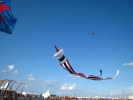
Et voilà, le ciel est clair, le vent a recommencé à turbuler et un imposant Jangang se cherche dans les azurs...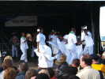
Les Colombiens et les Colombiennes sont sur scène, profitons-en ! Le décor de scène n'est pas trop adapté à leur complexion, on ne voit que les vêtements sur la photo, mais à l'oeil, ça passe bien...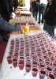
L'Organisation offre un pot bien fourni et bien... organisé. C'est une bonne occasion de rencontrer un tas de cervolistes plus ou moins perdus de vue et de discuter à l'infini !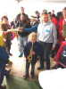
Polina, une charmante petite Ukrainienne, venue avec son papa (qui surveille) et sa maman, nous agrémentera de solos de saxophone. L'instrument est à sa taille, mais elle en joue mieux que beaucoup de pros, avec un talent et un rythme incroyables !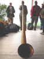
La Suisse nous régalera de concerts de Cor des Alpes, pas très agile mais très prenant !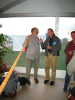
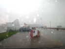
Il n'y a pas eu du soleil tous les jours, bien que je préfère oublier les mauvais moments. Ce matin au réveil, c'est moyen...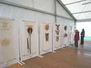
J'en profite pour voir l'expo de Claude Léa Commalonga dans le barnum commun. Ses CVs sont légers comme ceux de Thérèse, mais dans un style bien différent, moins arachnéen...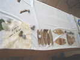
Pour créer ses oeuvres, elle fabrique elle-même des papiers à base de feuilles d'arbres, selon une technique proche de celle du papyrus !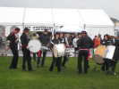
La fanfare des Carcahoux se met en place pour la parade dans les rues de Dieppe. Mais il fait trop mauvais et la parade est reportée à la semaine prochaine ! Les Carcahoux donneront quand même un bon aperçu de leur talent.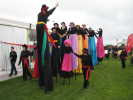
Leurs échassiers se perchent courageusement aussi. Mais les rues sont trop glissantes et tempétueuses, et ils feront des allers-retours sur les pelouses, derrière les barnums qui les abritent un peu de la pluie et des dangereuses rafales !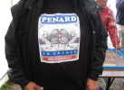
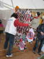
Wang-Zhu-San a réalisé un cerf-volant couvert de sifflets qui sont aussi son oeuvre... Quel travail, mais il faut une armature dense pour porter tout ça ! Pas de problème, de toute façon il faut un bon vent pour que les sifflets sifflent...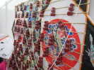
Un détail des sifflets en bambou et bois taillé... Le cerf-volant volera effectivement un moment, avec une grande queue, mais j'étais trop loin pour entendre les sifflets chanter...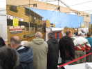
Pause méridienne au restaurant décoré de toiles western. La nourriture était correcte, un peu monotone (tous les jours, midi et soir : crudités ; moules, plat en sauce ou lasagnes ; pâtisserie) pour 10 jours de présence continue !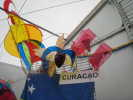
Les natifs de Curacao avaient construit des cerfs-volants originaux, à base de baguettes de bois blanc ligaturées et de cellophanes colorées ! Une bonne inspiration artistique, comme pour ce coq (agrémenté de quelques plumes) ou ce bélier (un peu lainé), et un vol très stable grâce à des cloisons verticales.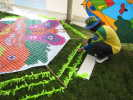
Le Guatemala construit toujours des cerfs-volants plats octogonaux à longue queue, en bambou recouvert de plastique orné de papier collé et entourés de ficelles portant des franges de papier découpé. Ils sont grands, mais loin du 12 m d'il y a quelques années (2000 ?) !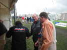
La Fédé est venue à plusieurs reprises mener une offensive de rapprochement avec le CVCF, via le responsable de la branche Cerf-Volant (Hubert Dessaint, voir photo) ou un Délégué Ministériel Détaché auprès de la FFVL mais qui débarque un peu sur le terrain sans connaître les antécédents...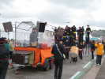
Les Carcahoux ont profité d'une amélioration météo pour un petit défilé sur la promenade ! Méfiants quand même (ils sont du coin...) ils ont une serre musicale transparente, imperméable et mobile abritant les instruments électroniques et la sono, et portant à l'arrière une batterie complète !